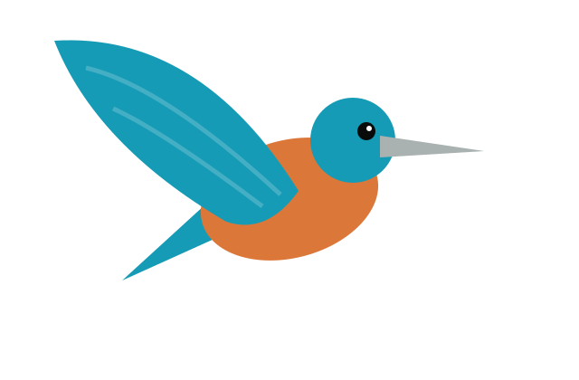

Common Kingfisher
Blue and orange; often near water.
Illustrated introductions to birds you may encounter in the region. Sightings vary.
Come birding with me ↗Blue and orange; often near water.

Common kingfisher · photo sourceWoodland bird; males may have long tail streamers.
Pink-tinged waterbird; seasonal occurrence varies.
Small owl with spotted plumage.
Tall crane associated with wetlands and fields.
Distinctive blue wings in flight.